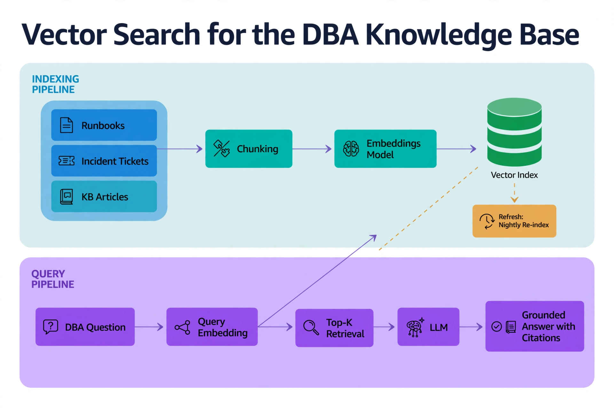
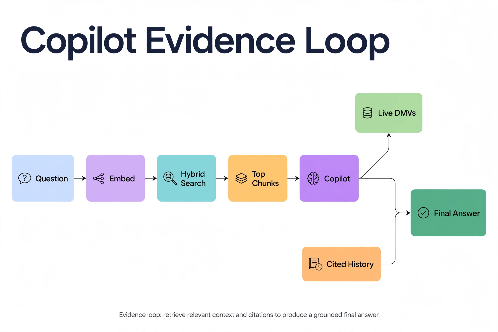

Chapter 28: Vector Search for the DBA Knowledge Base
Chapter 26's copilot reasons over live telemetry. But the hardest DBA questions are not about what the server is doing right now — they are about what happened last time: "We saw this blocking pattern six months ago; what did we do?" "Which runbook covers a failed AG failover?" That knowledge lives in incident tickets, postmortems, runbook wikis, and the heads of senior engineers. Vector search turns that scattered history into a queryable memory. You embed every document as a numeric vector, store it in SQL Server alongside the text, and retrieve by semantic similarity — so "tempdb contention during month-end close" finds the incident titled "PAGELATCH_UP storm on 2:4:2, Jan close" even though the words barely overlap. This chapter builds that knowledge base natively in SQL Server.
---
The 3 AM Vocabulary Problem
Full-text search fails on operational knowledge for a simple reason: the person writing the incident at 3 AM uses different words than the person searching for it at 3 PM. The ticket says "PAGELATCH_UP waits on tempdb data files, allocation bitmap contention"; the searcher types "tempdb slow during batch". Keyword overlap is near zero; the meaning is identical. Vector search closes that gap: each document chunk is stored with a numeric embedding, and a nearest-neighbor query surfaces the incident even though the words barely overlap. (How embeddings are produced and indexed is Book 4 territory; this chapter is only about pointing that capability at your runbooks, tickets, and incident history.)
SQL Server 2025 and Azure SQL Database support this natively with a VECTOR type and VECTOR_DISTANCE function. Your knowledge base lives in the same database as your telemetry — same backups, same security model, same audit tooling, no second database to operate.
---
Designing the Knowledge Base Schema
A DBA knowledge base has three document types: runbooks (how to handle a known scenario), incidents (what happened, what was done, what worked), and decisions (why the architecture looks the way it does). One table holds them all, with metadata columns that make retrieval precise — because pure semantic search without metadata filtering is how you get a 2021 runbook for a decommissioned cluster ranked above last month's incident.
-- Knowledge base: one table, chunked documents, metadata for filtered retrieval
CREATE TABLE dbo.dba_knowledge_chunks (
chunk_id INT IDENTITY(1,1) PRIMARY KEY,
doc_id NVARCHAR(100) NOT NULL, -- e.g. 'INC-2026-0413'
doc_type NVARCHAR(20) NOT NULL, -- 'runbook' | 'incident' | 'decision'
title NVARCHAR(300) NOT NULL,
chunk_index INT NOT NULL,
chunk_text NVARCHAR(MAX) NOT NULL,
embedding VECTOR(1536) NOT NULL, -- dimensions must match your model
system_name NVARCHAR(100) NULL, -- which cluster/instance it applies to
doc_date DATE NOT NULL, -- incident date or runbook last review
tags NVARCHAR(500) NULL, -- comma-separated: 'tempdb,blocking,ag'
superseded_by NVARCHAR(100) NULL, -- doc_id of the newer version, if any
CONSTRAINT UQ_dba_kb_chunk UNIQUE (doc_id, chunk_index)
);
-- Metadata + full-text support alongside vector search
CREATE INDEX IX_dba_kb_doctype_date ON dbo.dba_knowledge_chunks (doc_type, doc_date DESC);
CREATE FULLTEXT INDEX ON dbo.dba_knowledge_chunks (chunk_text, title)
KEY INDEX PK__dba_knowl__... ; -- replace with your PK nameChunking deserves care. Split documents at section boundaries into 300–600 token chunks, and prepend each chunk with the document title and a one-line summary before embedding. A chunk that starts "INC-2026-0413 — TempDB PAGELATCH contention during month-end close: …" retrieves far better than a naked paragraph, because the embedding captures the context the chunk would otherwise lose. Store superseded_by religiously — when a runbook is rewritten, link the old version forward so retrieval can prefer the current one.
---
Turning Runbooks and Tickets into Searchable Chunks

The diagram shows the two halves of the system. The indexing pipeline (top, blue-green) is a batch job: Runbooks, Incident Tickets, and KB Articles are chunked at section boundaries, passed through an Embeddings Model, and stored in the Vector Index — with a nightly re-index (amber) keeping it fresh as runbooks change. The query pipeline (bottom, purple) runs at question time: the DBA's question is embedded with the same model, top-K retrieval pulls the most similar chunks from the index, the LLM drafts an answer strictly from those excerpts, and the DBA gets a grounded answer with citations — every claim traceable to a runbook section or ticket. If the index is stale, the answers are stale: that dashed "Refresh" arrow is the operational heartbeat of the whole system.
The ingestion job is straightforward ETL with one DBA-specific twist: the source material is messy. Incident tickets have stack traces and half-finished thoughts; runbooks in git have "TODO: verify" sections; wiki pages are stale. The pipeline pulls documents from your ticketing API, wiki export, and markdown runbooks, chunks them at section boundaries, and stores each chunk with its embedding. Run it on a schedule and on every runbook commit — and skip re-embedding unchanged documents by hashing the source text.
import pyodbc
from openai import AzureOpenAI
from datetime import date
EMBEDDING_MODEL = "text-embedding-3-small" # 1536 dimensions
CHUNK_TOKENS = 500
def chunk_markdown(title: str, summary: str, body: str) -> list[str]:
"""Split on section boundaries; prefix each chunk with title + summary."""
chunks, current = [], ""
header = f"{title}\n{summary}\n\n"
for section in body.split("\n## "):
candidate = current + ("\n## " if current else "") + section
if len(candidate) > CHUNK_TOKENS * 4 and current:
chunks.append(header + current)
current = section
else:
current = candidate
if current:
chunks.append(header + current)
return chunks
def ingest_runbook(conn, aoai: AzureOpenAI, doc_id: str, title: str,
summary: str, body_markdown: str, system_name: str,
tags: str, doc_date: date):
chunks = chunk_markdown(title, summary, body_markdown)
resp = aoai.embeddings.create(model=EMBEDDING_MODEL, input=chunks)
vectors = [d.embedding for d in resp.data]
with conn.cursor() as cur:
# Mark any previous version of this doc as superseded
cur.execute("""
UPDATE dbo.dba_knowledge_chunks
SET superseded_by = ?
WHERE doc_id = ? AND superseded_by IS NULL
""", (doc_id, doc_id))
for i, (text, vec) in enumerate(zip(chunks, vectors)):
vec_literal = "[" + ",".join(f"{x:.6f}" for x in vec) + "]"
cur.execute("""
INSERT INTO dbo.dba_knowledge_chunks
(doc_id, doc_type, title, chunk_index, chunk_text,
embedding, system_name, doc_date, tags)
VALUES (?, 'runbook', ?, ?, ?, CAST(? AS VECTOR(1536)), ?, ?, ?)
""", (doc_id, title, i, text, vec_literal, system_name, doc_date, tags))
conn.commit()
return len(chunks)Two operational notes. First, embedding API calls cost money per token — batch chunks into single API requests (the code above already does) and skip re-embedding unchanged documents by hashing the source text and comparing against a stored hash. Second, treat the ingestion job like any ETL: log row counts, alert on zero-chunk runs, and keep the source documents in git so the knowledge base is rebuildable from scratch.
---
Semantic Retrieval with VECTOR_DISTANCE
Retrieval is a parameterized query: embed the user's question with the same model, then find the nearest chunks. The hybrid pattern — vector similarity plus metadata filters plus a full-text prefilter — consistently outperforms pure vector search for operational content, because it combines semantic matching ("this is about tempdb contention") with hard constraints ("only incidents from the last 18 months on the production cluster, excluding superseded runbooks").
-- Hybrid retrieval: embed the question in Python, pass the vector as a parameter
-- @qvec : the question embedding as a vector literal string
-- Filters: recent, non-superseded, matching system; ranked by cosine distance
SELECT TOP (5)
k.doc_id,
k.doc_type,
k.title,
k.chunk_index,
LEFT(k.chunk_text, 800) AS chunk_excerpt,
k.doc_date,
k.tags,
VECTOR_DISTANCE('cosine', k.embedding, CAST(? AS VECTOR(1536))) AS distance
FROM dbo.dba_knowledge_chunks k
WHERE k.superseded_by IS NULL
AND k.doc_date >= DATEADD(MONTH, -18, CAST(GETUTCDATE() AS DATE))
AND (? = '' OR k.system_name = ? OR k.system_name IS NULL)
AND (
? = ''
OR CONTAINS(k.chunk_text, ?)
)
ORDER BY distance ASC;The CONTAINS clause is the full-text prefilter: when the question contains a distinctive keyword (an error number like 1205, a wait type like PAGELATCH_UP), requiring it focuses retrieval sharply. Pass an empty string to skip the prefilter for purely conceptual questions. For knowledge bases beyond a few hundred thousand chunks, add a DiskANN vector index so the nearest-neighbor scan stays fast — the distance function and the ORDER BY stay the same; the index just accelerates them.
---
Feeding Runbook Evidence to the Copilot
The payoff for all this curation is Chapter 26's copilot: retrieved chunks are injected into its context as quoted evidence, each with its document ID and date, so operational answers cite the runbook they came from. The retrieved excerpts are evidence, not orders — the copilot still grounds live claims in DMV data, and uses the knowledge base for "what did we do last time" context.

This loop is the runtime counterpart to the indexing pipeline in Figure 28.1. A blue Question is Embedded (purple) and run through teal Hybrid Search — vector similarity plus metadata filters — to surface amber Top Chunks with their document IDs and dates. The violet Copilot orchestrator then fans out: the green Live DMVs branch pulls current wait stats, sessions, and Query Store data, while the orange Cited History branch carries the retrieved runbook evidence. Both merge into the dark-green Final Answer. The diagram's message: the copilot never answers from memory alone — every response is a fusion of what the database is doing right now and what the organization learned from past incidents.
The failure mode to watch is stale-knowledge hallucination: the model presenting a 2022 workaround as current advice. Three defenses, all in the schema and prompt: the 18-month recency filter, the superseded_by chain, and a prompt rule requiring the answer to include the source document's date whenever it cites one. A fourth defense is process: assign every runbook a review date, and let the ingestion job flag runbooks past their review date for a human to re-validate — retrieval quality is a curation problem, not just a search problem.
---
Measuring Retrieval Quality
Like the copilot's golden question set in Chapter 26, the knowledge base needs its own evaluation: 40–60 real questions paired with the document IDs that should be retrieved. Score recall@5 (is a relevant chunk in the top 5?) and precision@5 (how many of the top 5 are relevant?). When recall is low, the usual culprits are chunking (chunks too large, context stripped) or missing metadata (the right document exists but the system filter excluded it). When precision is low, tighten the prefilter or shorten the recency window.
Log every production retrieval — question embedding ID, returned chunk IDs, and whether the user marked the answer helpful. That log is a relevance-feedback dataset: questions where users downvoted the answer usually trace to a retrieval miss, and each miss tells you exactly which document should have ranked higher. Feed those corrections back as boosted examples and your knowledge base compounds in value the way a wiki never does: it learns which of its own pages actually answer which questions.
---
Key Takeaways
QueryOptimizer — Self-Hosted SQL Performance Workbench
EXPLAIN visualizer · Index advisor · Slow query dashboard · SQL Server
Test yourself on this chapter
5 questions · instant scoring · explanations included